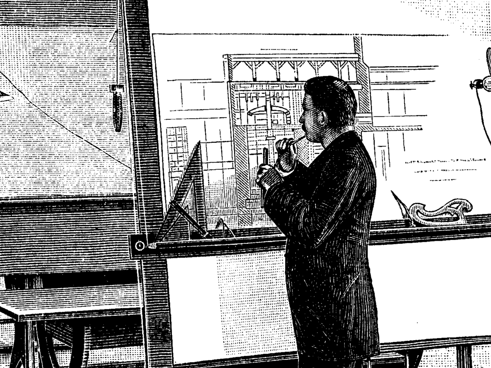
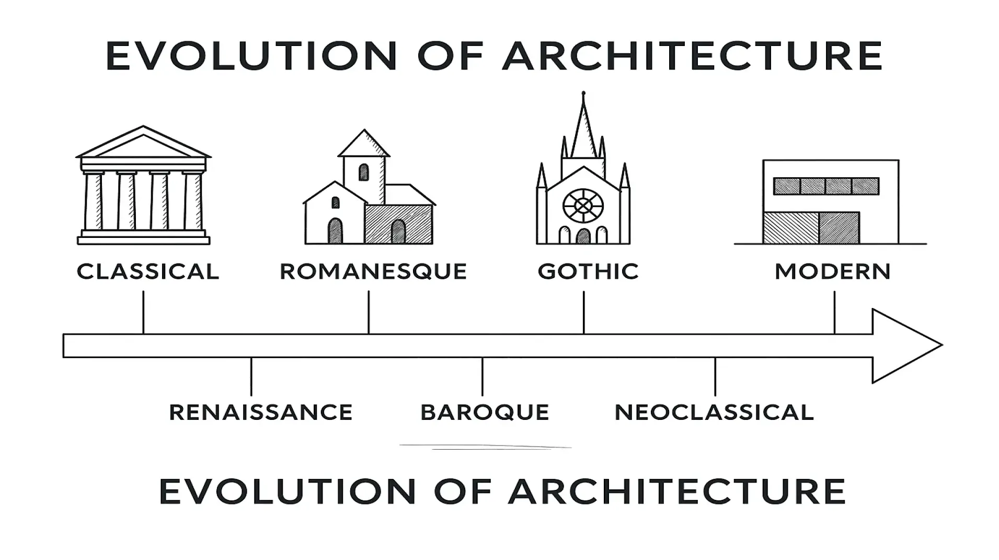
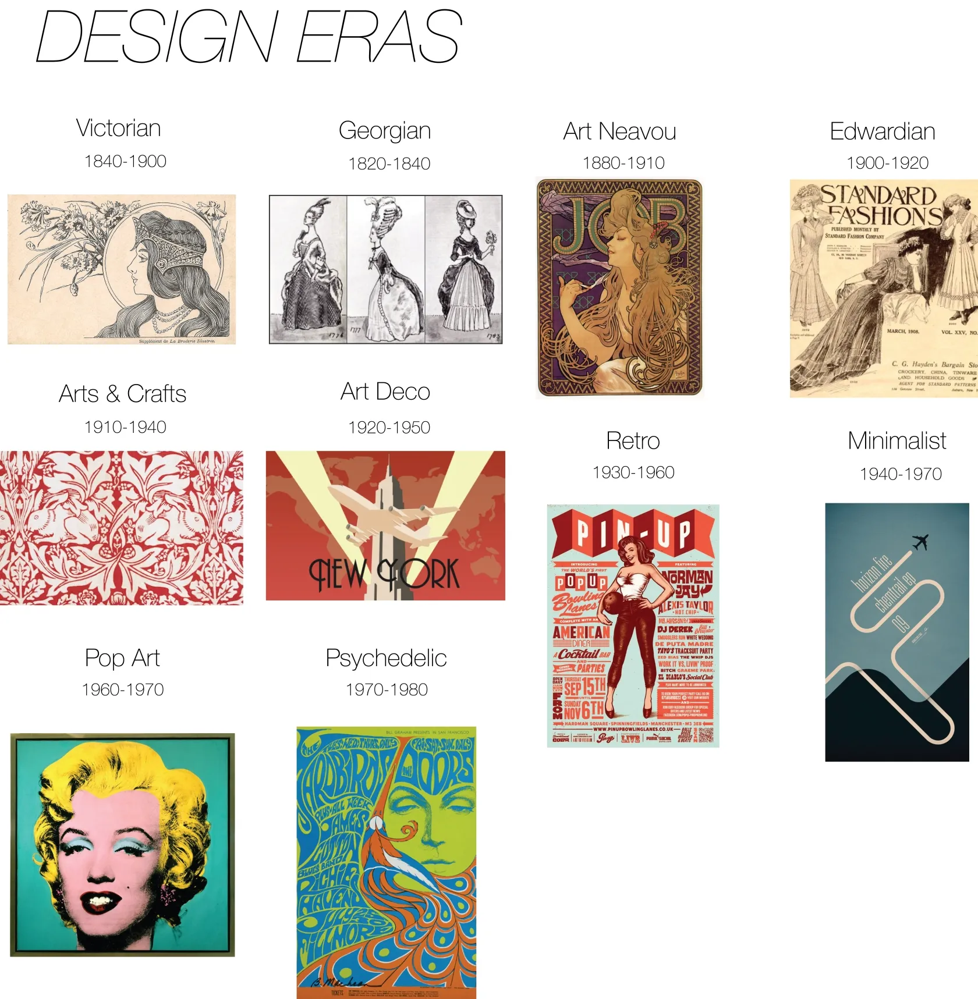
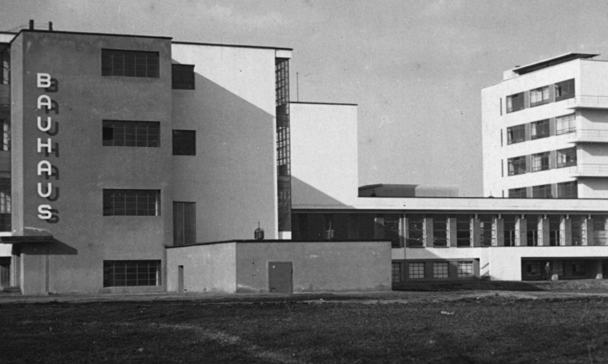
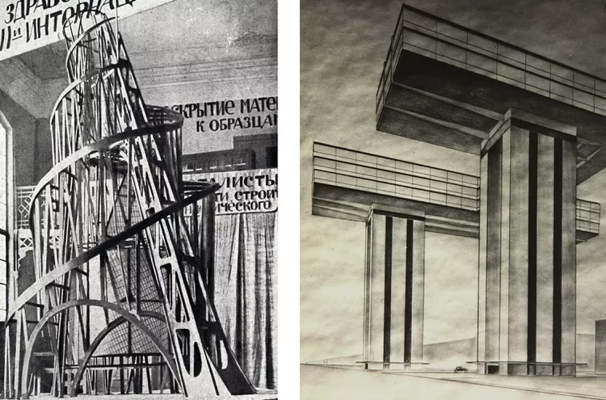
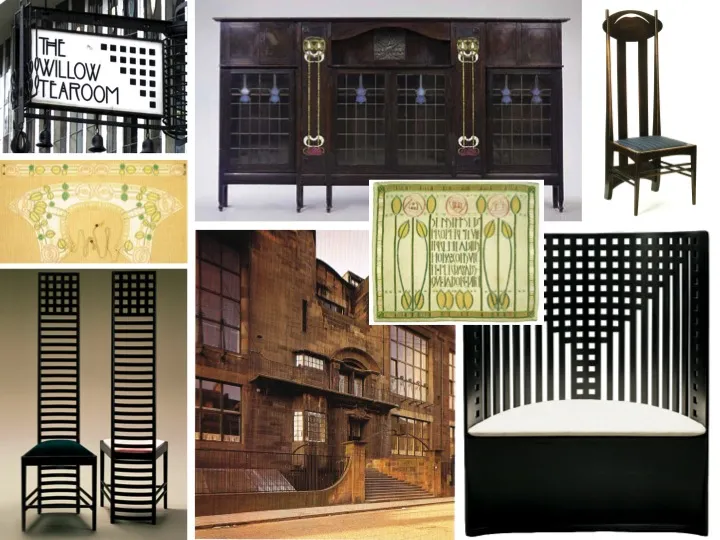
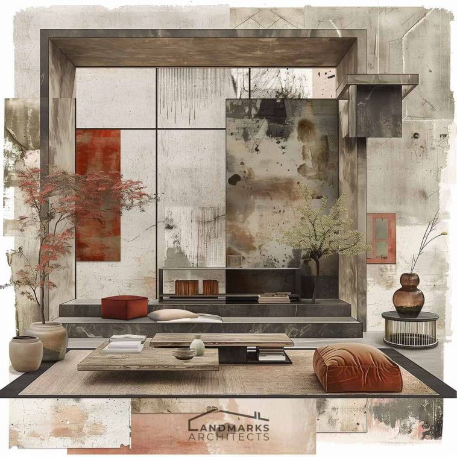
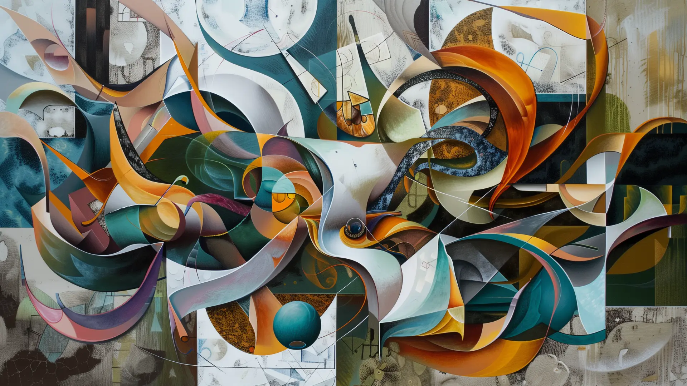
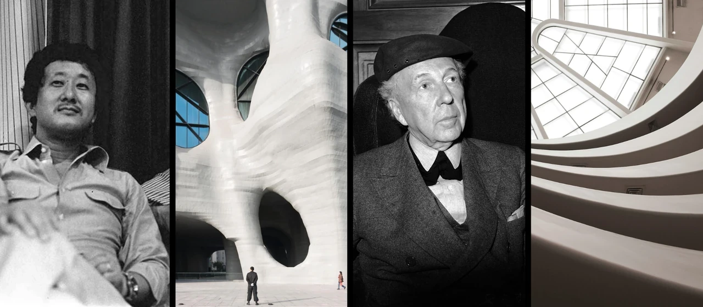

Designers and architects share the same creative DNA
blending art, logic, and empathy to build a world that looks good, feels right, and works better.
Architect 建筑师
Originated from the primitive need for shelter. Evolved from builders to professionals focusing on structure, aesthetics, and spatial planning.
起源于建造庇护所的原始需求，从工匠演变为以结构、美学与空间规划为核心的专业角色。

Designer 设计师
Originated from craftsmanship and the human pursuit of beauty and utility. Evolved from artisans to professionals who solve problems through visual language.
起源于工艺美术与人类对“美”与“实用”的追求，从早期的手工艺者演变为通过视觉语言解决问题的专业角色。
Both originated from the human instinct to improve living conditions and
seek beauty, blending functionality with artistry.
都起源于人类改善生活环境与追求美感的本能，兼具功能与艺术性。

Architect 建筑师
During the same period, industrialization and urbanization led architecture to become more scientific and systematic, forming the field of architectural studies.
同期，工业革命推动城市化与工程发展，建筑从工艺师走向科学化与系统化（建筑学体系形成）。

Designer 设计师
After the Industrial Revolution, printing, advertising, and product packaging created demand for design as a specialized discipline (graphic design, industrial design, etc.).
工业革命后，因印刷、广告、商品包装兴起，设计从手工艺转变为专业学科（平面设计、工业设计等）。
Both became professionalized and systematized after the Industrial Revolution,
evolving from “craftsmen” to “system designers.”
都在工业革命后实现专业化与学科化，从“手艺人”升级为“系统设计师”。
Architect 建筑师
Modernist architecture (e.g., Le Corbusier, Mies van der Rohe) also emphasized “form follows function.”
同期的现代主义建筑（如勒·柯布西耶、密斯·凡德罗）强调“形式追随功能”。

Designer 设计师
In the early 20th century, modernism emphasized functionality, rationality, and minimalist aesthetics (e.g., Bauhaus).
20世纪初现代主义运动兴起，功能主义、理性设计与简约美学成为主流（如包豪斯）。
Both were influenced by modernist ideology, pursuing functional priority,
rational construction, and aesthetic order.
都受现代主义思潮影响，追求功能优先、理性构造、美学秩序。

Architect 建筑师
Urbanization and technological progress expanded architectural forms (skyscrapers, postmodernism, deconstructivism).
城市化与技术革新推动建筑形式突破（高层建筑、后现代、解构主义）。

Designer 设计师
Post-war economic growth fueled consumer culture, leading to design diversification (branding, advertising, product, and interface design).
战后经济发展带来消费文化，设计多元化（品牌设计、广告、产品、界面）。
Both expanded their boundaries through globalization and technological progress,
forming independent cultural and stylistic identities.
都在全球化与科技化背景下扩展专业边界，形成独立的文化语言与风格体系。
Architect 建筑师
Green architecture, smart buildings, sustainable cities, and virtual architecture (BIM, AI modeling).
绿色建筑、智能空间、可持续城市、虚拟建筑（BIM、AI建模）。
Designer 设计师
Digitalization, AI, UX/UI design, sustainable design, and interdisciplinary collaboration (e.g., architectural visualization, experience design).
数字化、AI、UX/UI、可持续设计、跨领域融合（如建筑视觉化、体验设计）。
Both emphasize interdisciplinary integration, human-centered experience,
technological empowerment, and sustainability.
都强调跨界融合、人本体验、科技驱动、可持续发展。

Architect 建筑师
“Creating living experiences through spatial design, with architecture serving human needs.”
“以空间为媒介创造生活体验、建筑为人服务”。

Designer 设计师
“Human-centered thinking, creative problem-solving, and the balance between beauty and function.”
“以人为本、创造性解决问题、美与功能的平衡”。
The shared essence is humanity, creativity, and the unity of function and aesthetics
both are a fusion of art and science.
人本、创造、功能与美的统一是共同精神核心。两者皆为艺术与科学的结合体。

They both place humans at the center — using creativity and logic to balance functionality and beauty, striving to make life more comfortable, efficient, and meaningful through spatial and visual experiences.
都以「人」为中心，用「创造力」与「逻辑思维」去平衡功能与美感，
追求让生活更舒适、更高效、更有意义的空间与视觉体验。